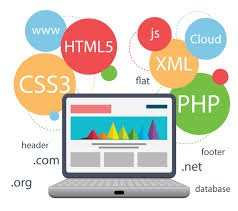

88726059 Web-based Application Development |
การพัฒนาโปรแกรมประยุกต์บนเว็บ |
|  |
|
การสร้างโปรแกรมประมวลผลบนระบบเว็บด้วยเฟรมเวอร์ค การพัฒนาแบบเชิงวัตถุและแบบโมเดล-วิว-คอนโทรเลอร์ การออกแบบส่วนติดต่อผู้ใช้ การจัดรูปแบบด้วยชีท การสร้างเว็บแบบไดนามิก การใช้ประโยชน์โปรแกรมฝั่งลูกข่ายและแม่ข่าย โมเดลโครงสร้างข้อมูลเอกสาร การใช้โปรแกรมฝั่งลูกข่ายเพื่อควบคุมการทํางานของเว็บ จาวาสคริบท์ เอแจ็กซ์ กลไกคุกกี้และการสร้างเว็บที่เก็บสถานะ เว็บเอพีไอ ระบบประมวลผลร่วมกับฐานข้อมูล ข้อคํานึงถึงด้านความปลอดภัยของระบบงาน
Web application development processes based on framework, Object-oriented design, MVC, user interface design for effective interaction and processing, cascading style sheet, client-side language and programming, DOM, HTTP request and response, cookies, stateless and stateful concept, server-side language and programming, JavaScript, AJAX, server services/resources and API, tools and IDE for web application development, database integration application, security issues for web application